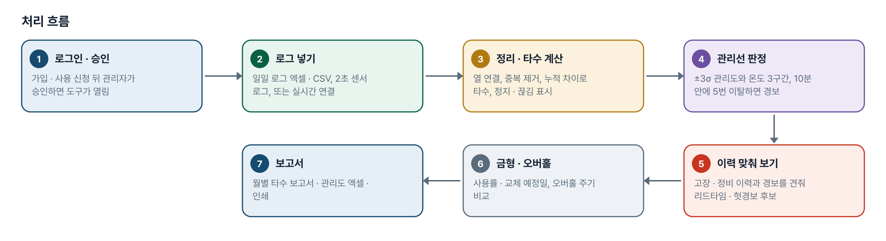
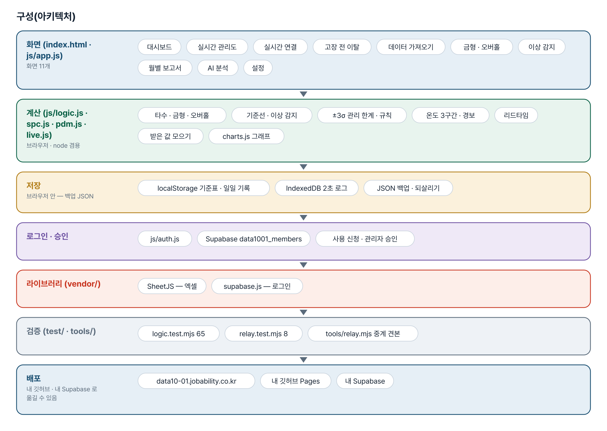
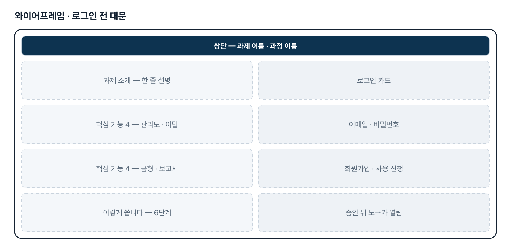
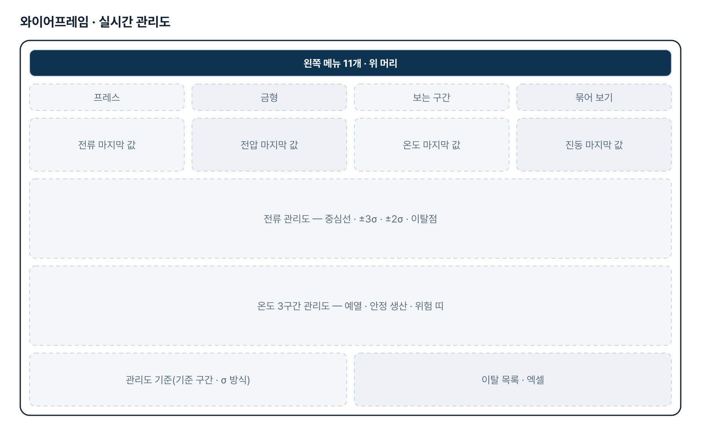
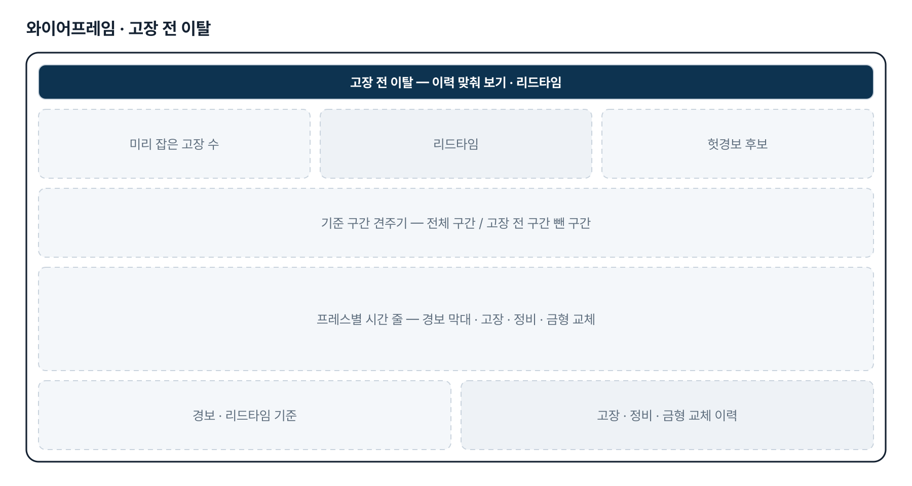
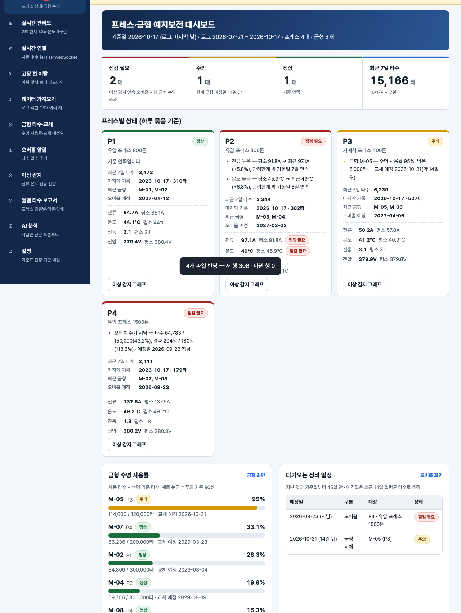

기획서 내려받기
파이프라인 · 아키텍처 · 와이어프레임 · 개발일지가 들어간 워드 문서입니다. 버전마다 따로 남깁니다.
| 버전 | 날짜 | 바뀐 점 | 파일 |
|---|---|---|---|
| v2.0 | 2026-11-10 | 최종 기획서 — 파이프라인 · 아키텍처 · 와이어프레임 정리 / 로그인 · 사용 신청 · 관리자 승인(요청자 Supabase 로 옮길 수 있게) / 로그인 전 대문 | 워드 내려받기 |
요구사항과 구현
| 기획서 요구 | 구현 |
|---|---|
| 프레스 이상 감지 알림 | 최근 14일을 직전 42일 기준선(중앙값 · MAD)과 비교, 주의 · 점검 필요와 근거 숫자 |
| 2초 센서 값 ±3σ 관리선(2차) | 실시간 관리도 4장 — 중심선 · ±3σ · ±2σ · 이탈점, 기준 구간 기본 = 전체 구간(3차) |
| 온도 3구간 관리선(3차) | 예열 · 안정 생산 · 위험 띠, 구간별 시간 · 예열 시간 · 위험 경보, 경계는 프레스마다 고침 |
| 실시간 — 설비에서 바로 받기(3차) | 시뮬레이터 · HTTP 주기 받기 · WebSocket 과 중계 견본(tools/relay.mjs). PLC → 게이트웨이 연결은 2단계 |
| 가상 고장 데이터로 확인(3차) | 3대 × 5일 2초 로그 + 고장 · 정비 · 금형 교체 이력, 「고장 전 이탈」 리드타임 |
| 금형별 타수 집계 · 교체주기 알림 | 금형별 사용 타수 · 사용률 · 교체 예정일(최근 14일 일평균), 교체 기록 버튼 |
| 프레스 정기 오버홀 알림 | 마지막 오버홀부터 타수 · 날수를 주기와 비교, 완료 기록 버튼 |
| 월별 프레스 종류별 타수 보고서 | 종류별 · 프레스별 · 금형별 타수, 추이 그래프, 엑셀 · 인쇄 |
| 외부 망 · 협력사 접속 | 웹 주소 + 로그인 · 사용 신청 · 관리자 승인. 업무 데이터 함께 보기는 2단계 |
| 알림 보내기(메일 · 메신저) | 2단계 — 지금은 화면 표시 |
그림으로 보기






개발일지
2026-11-10 · 최종 기획서 · 로그인
- 로그인 · 사용 신청 · 관리자 승인 키트 적용(표 data1001_members)
- 로그인 전 대문 — 과제 소개 · 핵심 기능 4 · 이렇게 씁니다
- 최종 기획서 v2.0 — 파이프라인 · 아키텍처 · 와이어프레임
- 내 깃허브 · 내 Supabase 로 옮기는 안내서
2026-11-08 · 주소 옮기기
- 옛 사이트 주소를 새 과정 도메인 주소로 바꿈
2026-10-27 · 3차 반영
- 수강생 답 — 기준 구간 = 전체 구간, 가상 더미 데이터, 실시간 = 설비에서 바로, 온도 3구간
- 가상 고장 데이터(3대 × 5일 216,000행 + 이력 8건) — 고장 3건 모두 경보가 먼저(1.5~3.8시간)
- 실시간 연결 화면과 참고용 중계 서버 tools/relay.mjs
- 온도 3구간 관리선, 공개 https 페이지에서 내 PC 중계로 받을 때 「로컬 네트워크 접근」 안내
- 시험 65 + 중계 8 통과
2026-10-21 · 2차 반영
- 수강생 2초 로그 샘플(모의 데이터)과 ±3σ 관리선 요청
- spc.js · rawstore.js — 2초 로그 나눠 읽기 · IndexedDB · 관리 한계 · 규칙
- σ 기본 = 표본 표준편차, 추가 규칙은 기본 끔
- 시험 54개 통과
2026-10-20 · 1단계
- 패들릿 게시물 · 댓글로 기획서 v0.1
- 로그 가져오기 · 대시보드 · 금형 · 오버홀 · 이상 감지 · 월별 보고서 · AI(이름 가림)
- 가상 샘플(프레스 4대 × 90일), 시험 40개 통과